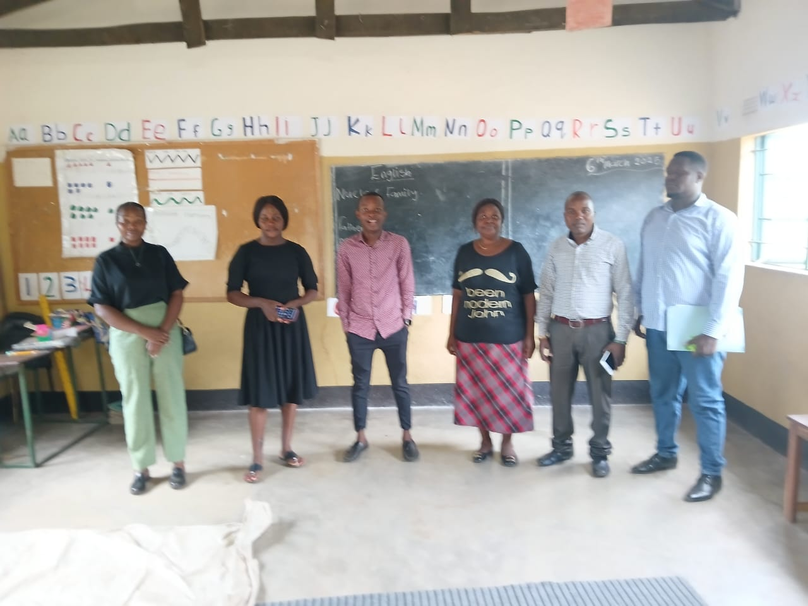

Education & Training
Climate change, driven primarily by human activities such as fossil fuel burning and deforestation,
has significant impacts on both the environment and human health. Deforestation leads to increased greenhouse
gases, soil erosion, disrupted water cycles, and loss of biodiversity. ZTF is dedicated to reversing
these trends through strategic initiatives aimed at restoring forests and promoting sustainable land use.

Waste managment
Improper waste disposal contributes to climate change and environmental degradation. ZTF will continue
advocating for effective waste management practices, including recycling and composting, to minimize these
impacts. By educating communities and implementing sustainable waste management systems, ZTF aims to reduce
greenhouse gas emissions and promote a cleaner environment.
Agriculture & Sustainability
Smallholder farmer training, inputs, and market access programs.ZTF encourages the adoption of sustaniable
farming methods to reduce the environmental impact of chemical fertilizers. By educating farmers on
climate smart agricultural practices to improve soil health and increase agricultural productivity.

Youth & Women Empowerment
Mentorship, leadership development, and entrepreneurship support. This youthful population is double edged
sword depending on how it is harnessed, as it can contribute to labour needed for driving the economy and
bringing it to the required state or if not well managed can negatively affect economic growth as it’s a
population bracket that is highly dependent on government structures for survival.
Impact Statement
Through community partnerships, we strive to deliver measurable improvements in education, health, and livelihoods.
Approach
We work with local leaders, assess needs, and implement scalable programs with clear milestones.
Funding
nations, and community fundraising initiatives.
Get Involved
Programs are funded by grants, do
Volunteer, partner, or contribute to help us expand our reach and deepen impact.


Public Comments